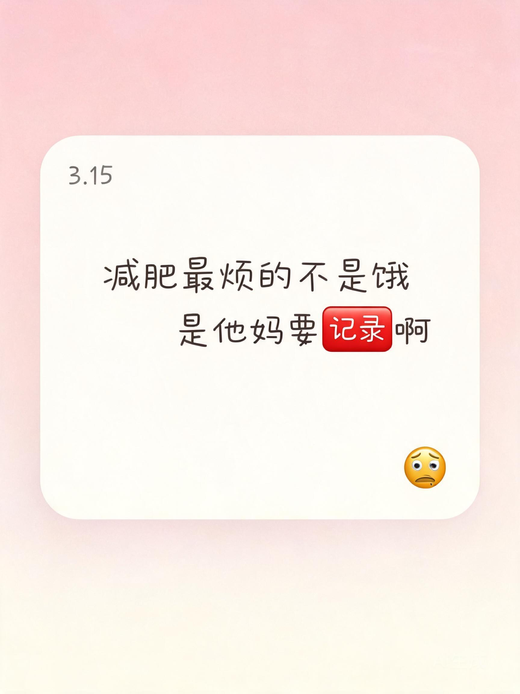
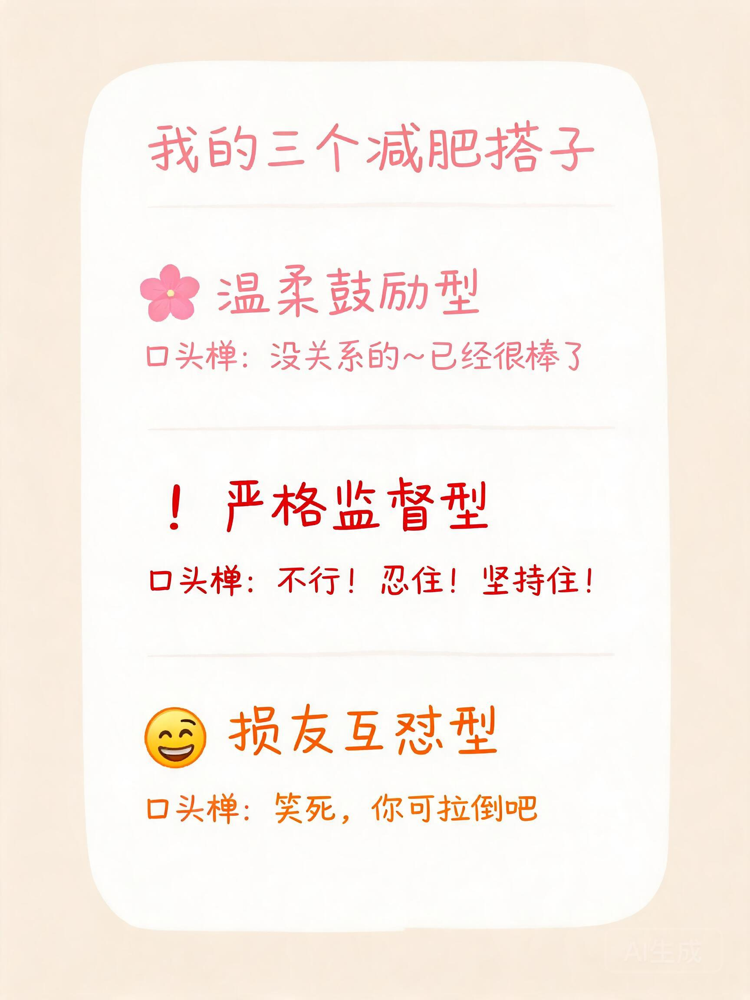
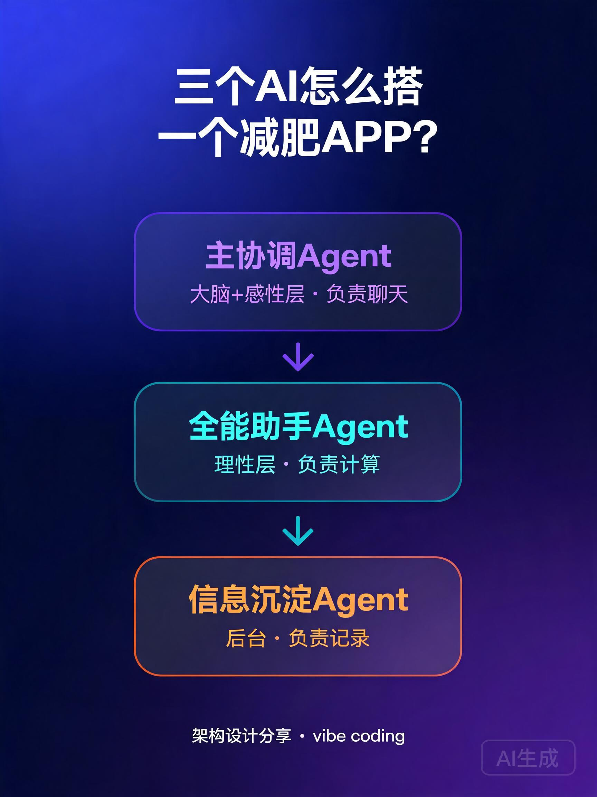

📱 双平台内容作战日历
两周14天精细化排期 · 25条内容规划 · 核心目标：APP获客 + 账号涨粉
小红书·用户号
小红书·开发者号
抖音·用户号
抖音·开发者号
第1周
冷启动期 · 人设建立 + 痛点共鸣
周一Day 1
📕 用户号
上班族减肥最烦的不是饿，是记录啊…
🎵 用户号
当我用减肥APP vs 用减肥搭子
周二Day 2
📕 开发者号
瘦了30斤的程序员，做了个减肥APP
🎵 开发者号
边写代码边减肥，我瘦了30斤
周三Day 3
📕 用户号
我的三个减肥搭子，一个比一个离谱
🎵 用户号
三种减肥搭子，你选哪个？
周四Day 4
📕 开发者号
三个AI Agent怎么协作？架构揭秘
周五Day 5
📕 用户号
用聊天记录减肥？一周实测报告
🎵 用户号
说一句话就自动记录热量？离谱
周六Day 6
🎵 开发者号
独立开发第30天，产品终于上线了
📕 用户号
宝妈减肥太难了…直到我遇到了搭子
☕
内容复盘 & 互动回复
第2周
深度种草期 · 功能价值 + 转化引导
周一Day 8
📕 用户号
上班族一周减脂食谱｜AI搭子给我配的
🎵 用户号
减肥博物馆？我的减肥居然有纪念册了
周二Day 9
📕 开发者号
独立开发避坑｜这5个错误我帮你踩了
🎵 开发者号
vibe coding实录｜调教AI搭子的一天
周三Day 10
📕 用户号
减了半个月，我的减肥博物馆长这样
🎵 用户号
带饭族福音！说一句就记完热量了
周四Day 11
📕 开发者号
从0用户到1000用户，我做了什么
周五Day 12
📕 用户号
8款减肥APP实测，这款最适合懒人
🎵 用户号
当你有个毒舌减肥搭子…
周六Day 13
🎵 开发者号
一个人做APP有多难？真实记录
📕 用户号
产后减肥不敢节食？我的温和减脂法
📊
数据复盘 & 下周优化8篇
小红书·用户号
5篇
小红书·开发者号
7条
抖音·用户号
5条
抖音·开发者号
🎯 核心运营策略
- 双号联动：开发者号做信任背书，用户号做转化种草，评论区互相导流
- 人群精准：上班族（职场/带饭/久坐）+ 宝妈（产后/碎片时间/温和减脂）双轨并行
- 内容节奏：痛点→种草→测评→干货→转化，循序渐进建立信任
- 蹭热点：vibe coding、AI Agent、独立开发等话题自带流量buff
- 转化路径：评论区引导 → 主页置顶笔记 → 私信关键词 → 下载链接
- 素材复用：一条内容多平台分发，录屏素材同时做小红书图文和抖音短视频
📋选题详情表
📕 小红书·用户号
📕 小红书·开发者号
🎵 抖音·用户号
🎵 抖音·开发者号
| 序号 | 标题 | 类型 | 核心钩子 | 优先级 |
|---|---|---|---|---|
| 1 | 上班族减肥最烦的不是饿，是记录啊… | 情绪共鸣 | 戳中"记录太麻烦"的普遍痛点 | 高 |
| 2 | 我的三个减肥搭子，一个比一个离谱 | 趣味种草 | 三种人格反差，新鲜感拉满 | 高 |
| 3 | 用聊天记录减肥？一周实测报告 | 测评种草 | 真实体验+数据，可信度高 | 高 |
| 4 | 宝妈减肥太难了…直到我遇到了搭子 | 宝妈视角 | 宝妈痛点精准打击，情绪共鸣 | 高 |
| 5 | 上班族一周减脂食谱｜AI搭子给我配的 | 干货食谱 | 实用干货，收藏率高 | 中 |
| 6 | 减了半个月，我的减肥博物馆长这样 | 效果展示 | 成就感+情感价值，独特功能 | 中 |
| 7 | 8款减肥APP实测，这款最适合懒人 | 横评种草 | 对比测评，突出差异化优势 | 高 |
| 8 | 产后减肥不敢节食？我的温和减脂法 | 宝妈干货 | 宝妈人群精准，科学不焦虑 | 中 |
| 序号 | 标题 | 类型 | 核心钩子 | 优先级 |
|---|---|---|---|---|
| 1 | 瘦了30斤的程序员，做了个减肥APP | 个人故事 | 真实经历+产品动机，自带信任 | 高 |
| 2 | 三个AI Agent搭一个减肥APP？ | 技术干货 | 技术展示，专业度拉满 | 中 |
| 3 | 独立开发避坑｜这5个错误我帮你踩了 | 经验分享 | 干货价值，开发者人群精准 | 中 |
| 4 | 从0用户到1000用户，我做了什么 | 增长复盘 | 数据+经验，收藏率高 | 高 |
| 5 | 一个人做完整APP有多难？真实记录 | 真实记录 | 共鸣感强，引发敬佩和关注 | 中 |
| 序号 | 标题 | 类型 | 时长 | 前3秒钩子 | 优先级 |
|---|---|---|---|---|---|
| 1 | 当我用减肥APP vs 用减肥搭子 | 反差短剧 | 30s | "以前减肥vs现在减肥"左右分屏 | 高 |
| 2 | 三种减肥搭子，你选哪个？ | 互动测试 | 25s | "温柔/严格/毒舌，选一个当你搭子" | 高 |
| 3 | 说一句话就自动记录热量？离谱 | 功能演示 | 20s | 直接展示聊天→自动记录全过程 | 高 |
| 4 | 减肥博物馆？我的减肥居然有纪念册了 | 功能展示 | 30s | "减肥还能有博物馆？太有仪式感了" | 中 |
| 5 | 带饭族福音！说一句就记完热量了 | 职场场景 | 20s | "上班族带饭怎么算热量？一句话搞定" | 高 |
| 6 | 当你有个毒舌减肥搭子… | 趣味短剧 | 35s | "我吃了个蛋糕"→毒舌回复直接笑喷 | 高 |
| 7 | 宝妈减肥有多难？有人懂吗… | 情绪共鸣 | 30s | "带娃一天累成狗还得减肥？" | 中 |
| 序号 | 标题 | 类型 | 时长 | 前3秒钩子 | 优先级 |
|---|---|---|---|---|---|
| 1 | 边写代码边减肥，我瘦了30斤 | Vlog日常 | 40s | "程序员减肥有多难？我瘦了30斤" | 高 |
| 2 | 独立开发第30天，产品终于上线了 | 进度更新 | 35s | "一个人开发30天，我的APP上线了" | 高 |
| 3 | vibe coding实录｜调教AI搭子的一天 | coding日常 | 45s | "今天vibe coding，给AI搭子调人格" | 高 |
| 4 | 一个人做APP有多难？真实记录 | 真实记录 | 50s | "从设计到开发到上线，一个人干" | 中 |
| 5 | 三个AI Agent搭一个减肥APP？ | 技术展示 | 30s | "我用三个AI做了个减肥搭子APP" | 中 |
📕小红书·用户号 · 13篇笔记
聚焦上班族+宝妈人群，从痛点共鸣到功能种草，循序渐进引导下载转化。点击卡片查看完整笔记内容 👇

情绪共鸣
上班族减肥最烦的不是饿，是记录啊…
高优先级

趣味种草
我的三个减肥搭子，一个比一个离谱
高优先级
用聊天记录减肥？
一周实测报告
📊 测评种草
测评种草
用聊天记录减肥？一周实测报告
高优先级
宝妈减肥太难了…
直到我遇到了搭子
👩👧 宝妈视角
宝妈视角
宝妈减肥太难了…直到我遇到了搭子
高优先级
上班族一周减脂食谱
AI搭子给我配的
🥗 干货食谱
干货食谱
上班族一周减脂食谱｜AI搭子给我配的
中优先级
我的减肥博物馆
减了半个月长这样
🏛️ 效果展示
效果展示
减了半个月，我的减肥博物馆长这样
中优先级
8款减肥APP实测
这款最适合懒人
📱 横评种草
横评种草
8款减肥APP实测，这款最适合懒人
高优先级
产后减肥不敢节食？
我的温和减脂法
🤱 宝妈干货
宝妈干货
产后减肥不敢节食？我的温和减脂法
中优先级
减肥APP大PK
5款实测，谁最好用
⚔️ 真实测评
对比测评
用了5个减肥APP，这款居然让我坚持下来了
高优先级
三种减肥搭子
你选哪个？
🎯 测一测
互动测试
三种减肥搭子选一个，你会pick谁？
高优先级
一句话记热量
是智商税吗
🔍 真实实测
功能实测
实测｜说一句话真的能自动记录热量？
高优先级
减肥纪念册
每一步都算数
🏛️ 减肥博物馆
功能种草
用了一个月，我的减肥居然有本"纪念册"了
中优先级
毒舌减肥搭子
每天又气又笑
😂 日常互怼
趣味日常
当我有个毒舌减肥搭子…每天又气又笑
高优先级
💻小红书·开发者号 · 21篇笔记
vibe coding人设 + 真实减肥故事，建立专业信任背书，向用户号导流。点击卡片查看完整笔记内容 👇
个人故事
瘦了30斤的程序员，做了个减肥APP
高优先级

技术干货
三个AI Agent搭一个减肥APP？
中优先级
独立开发避坑
这5个错误我帮你踩了
⚡ 经验分享
经验分享
独立开发避坑｜这5个错误我帮你踩了
中优先级
从0到1000用户复盘
我做了什么
📈 增长复盘
增长复盘
从0用户到1000用户，我做了什么
高优先级
一个人做APP有多难？
真实记录
📝 真实记录
真实记录
一个人做完整APP有多难？真实记录
中优先级
减肥搭子正式上线
核心功能一览
🚀 上线首发
上线首发
上线了！「减肥搭子」核心功能一览
高优先级
聊天即记录
功能拆解
🔧 技术拆解
功能拆解
功能拆解｜"聊天即记录"是怎么实现的
高优先级
三种人格模式
总有一款适合你
🎭 人格系统
功能介绍
三种人格模式，总有一款适合你
高优先级
减肥博物馆
减肥也有仪式感
🏛️ 独特功能
功能介绍
功能开箱｜减肥博物馆，减肥也有仪式感
中优先级
v1.0上线
后续路线图公开
🗺️ 版本规划
上线规划
v1.0上线了！后续更新路线图公开
中优先级
减肥博物馆诞生记
开发心路历程
💭 心路历程
开发心路
做「减肥博物馆」功能的心路历程
中优先级
三Agent架构诞生
构建历程
🏗️ 技术构建
构建历程
三AI Agent架构是怎么一步步搭起来的
高优先级
独立开发第30天
产品终于上线了
📅 开发日记
进度日记
独立开发第30天，我的APP终于上线了
高优先级
VibeCoding
调教AI的一天
🎧 日常vlog
vibe日常
vibe coding实录｜调教AI减肥搭子的一天
高优先级
聊天即记录
开发者实测
🧪 亲自测试
开发者实测
我自己做的APP，实测一下"聊天即记录"
中优先级
三人格实测
被自己做的AI怼了
😂 趣味测试
趣味实测
三种AI人格实测｜被自己做的AI怼了
中优先级
VibeCoding
30天做完整APP
🎧 方法论
vibe教程
用Vibe Coding 30天做了个完整APP
高优先级
上线一个月收入
真实数据公开
💰 数据透明
收入公开
做APP第一个月，我赚了多少钱
高优先级
小红书引流
真实数据复盘
📈 运营复盘
运营复盘
我在小红书发笔记，引流了多少用户
高优先级
做APP前后
我的生活变化
🌱 成长记录
个人变化
做APP之前 vs 之后，我的生活完全变了
高优先级
独立开发7大坑
血泪教训
🕳️ 避坑指南
避坑指南
独立开发第一个月，我踩了7个坑
高优先级
🎬抖音·用户号 · 7条脚本
短视频脚本，前3秒钩子+剧情+功能展示+引导关注。点击卡片查看完整分镜脚本 👇
当我用减肥APP vs 用减肥搭子
30s
🔥 前3秒钩子：左右分屏对比——"以前减肥记录 vs 现在减肥记录"
左边：手忙脚乱翻APP选分类搜食物，一脸烦躁。右边：发一句"今天吃了沙拉"，自动记录完成，轻松一笑…
反差短剧
高优先级
三种减肥搭子，你选哪个？
25s
🔥 前3秒钩子："温柔型、严格型、毒舌型，三个减肥搭子选一个陪你"
依次展示三种搭子的回复风格，每一种都有代表性对话，最后屏幕出现"评论区告诉我你选哪个"…
互动测试
高优先级
说一句话就自动记录热量？离谱
20s
🔥 前3秒钩子：直接录屏展示聊天→自动记录的全过程
APP录屏+语音旁白："就说一句话，吃了什么、多少热量、自动记到饮食日记，全程不用手动点任何东西…"
功能演示
高优先级
减肥博物馆？我的减肥居然有纪念册了
30s
🔥 前3秒钩子："减了半个月，我的减肥博物馆居然长这样？"
滑动展示博物馆页面：金句墙、食谱库、时间轴、里程碑徽章，边滑边解说，"原来减肥也可以这么有仪式感…"
功能展示
中优先级
带饭族福音！说一句就记完热量了
20s
🔥 前3秒钩子："上班族带饭怎么算热量？一句话就搞定"
职场场景：午休时间，对着手机说"今天带了西红柿炒蛋+半碗米饭"，搭子自动记录热量，同事投来好奇的目光…
职场场景
高优先级
当你有个毒舌减肥搭子…
35s
🔥 前3秒钩子："我就吃了一口蛋糕"→毒舌回复直接笑喷
搞笑短剧形式：女生对着手机说"我就吃了一口蛋糕"，搭子回复"一口？蛋糕听了都不信，你那一口有半个大"…
趣味短剧
高优先级
宝妈减肥有多难？有人懂吗…
30s
🔥 前3秒钩子："带娃一天累成狗，还要减肥？有人懂这种感受吗"
宝妈第一视角：趁娃睡觉偷偷吃一口零食、带娃间隙做几个动作、晚上娃睡了才有自己的时间…情绪拉满后引出温和减脂搭子…
情绪共鸣
中优先级
⌨️抖音·开发者号 · 12条脚本
vibe coding人设 + 独立开发日常，建立信任背书。点击卡片查看完整分镜脚本 👇
边写代码边减肥，我瘦了30斤
40s
🔥 前3秒钩子："做程序员五年，我从130斤胖到160斤，然后又瘦回来了"
vlog形式：从以前胖的时候的照片/视频，切到现在写代码的样子，穿插运动、称重的片段，讲述减肥心路…
Vlog日常
高优先级
独立开发第30天，产品终于上线了
35s
🔥 前3秒钩子："一个人、一台电脑、30天，我的减肥APP终于上线了"
快剪形式：设计稿→写代码→调试→测试→上线点击，配上节奏感强的BGM，最后展示APP界面和下载页…
进度更新
高优先级
vibe coding实录｜调教AI搭子的一天
45s
🔥 前3秒钩子："今天vibe coding，给我的AI减肥搭子调人格，差点被它怼了"
第一视角coding：屏幕录制+旁白，展示调试prompt的过程，中间插入搞笑的AI回复，最后展示成功的效果…
coding日常
高优先级
一个人做APP有多难？真实记录
50s
🔥 前3秒钩子："从设计到开发到运维，一个人做完整APP到底有多难？"
真实记录一天的工作：早上画UI、中午写后端、下午联调bug、晚上部署上线，中间穿插遇到的坑和解决的瞬间…
真实记录
中优先级
三个AI Agent搭一个减肥APP？
30s
🔥 前3秒钩子："我用三个AI做了个减肥APP，它们居然会分工合作"
架构图解+动画演示：三个Agent分别是什么角色、怎么协作、信息怎么流转，配上科技感BGM，最后引导下载体验…
技术展示
中优先级
🚫敏感词审查与规避指南
小红书+抖音双平台敏感词自查，6大类风险词全覆盖，发布前对照检查，避免限流封号 👇
📋 6大类风险词
🔍 逐篇审查报告
✅ 发布自检清单
🏷️爆款标题备选库
每篇内容配5个不同角度的爆款标题，覆盖情绪/反差/提问/自曝/悬念等起手式，直接抄作业 👇
📕 小红书·用户号
📕 小红书·开发者号
🎵 抖音·用户号
🎵 抖音·开发者号
✂️内容精简与开头优化指南
每篇内容的开头钩子优化 + 精简建议，前3秒必须抓人，废话全部砍掉 👇
📕 小红书·用户号
📕 小红书·开发者号
🎵 抖音·用户号
🎵 抖音·开发者号
💡新增选题库 · 20个全新角度
每个类型新增5个不同角度选题，覆盖更多场景和用户痛点，持续输出不缺素材 👇
📕 小红书·用户号
📕 小红书·开发者号
🎵 抖音·用户号
🎵 抖音·开发者号
📖开发者深度解读 · 3篇长文
从产品、技术、运营三个维度深度拆解，建立专业信任背书，吸引高质量用户 👇